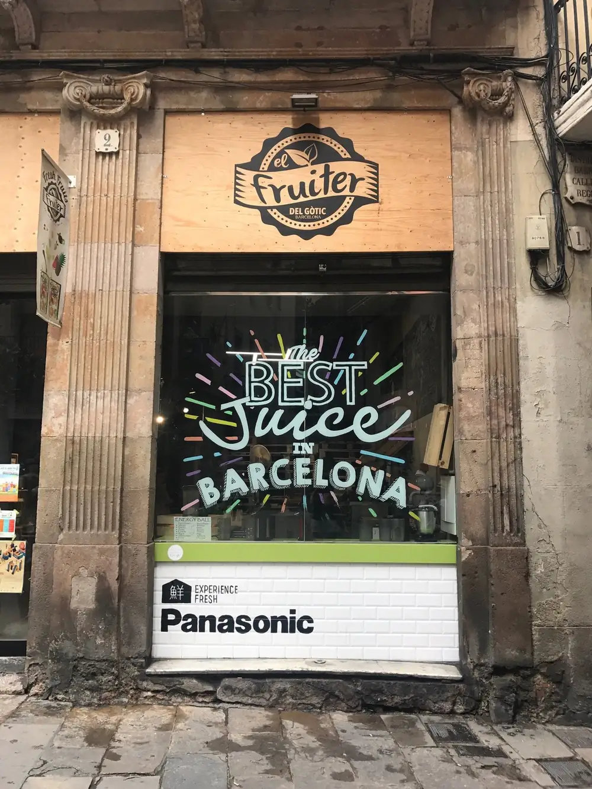
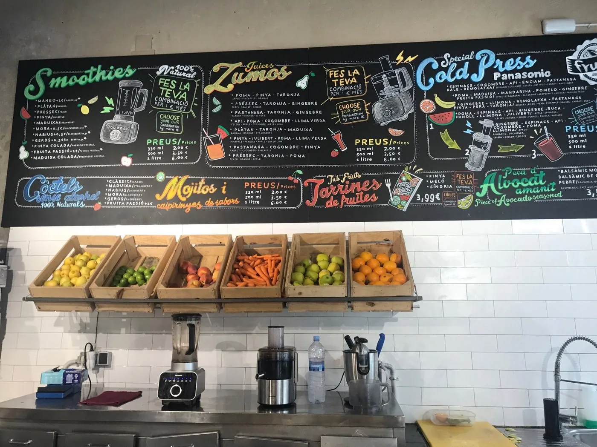
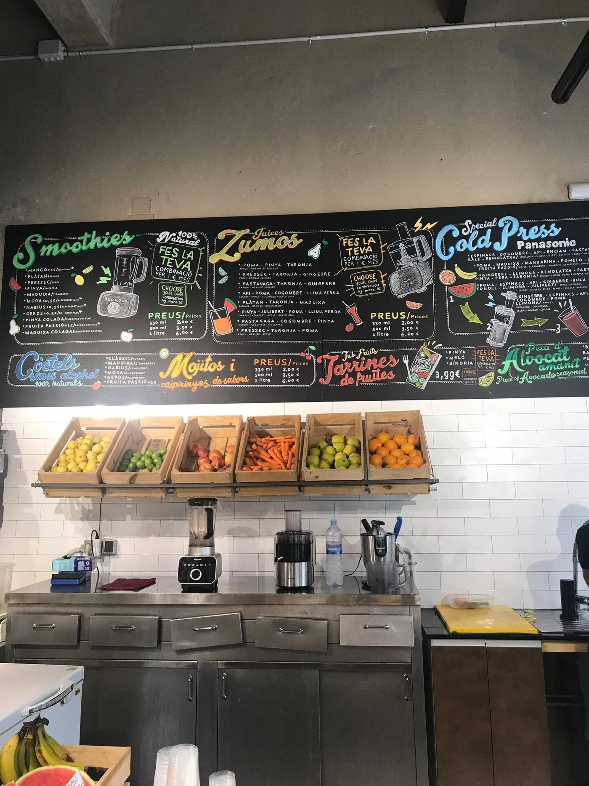
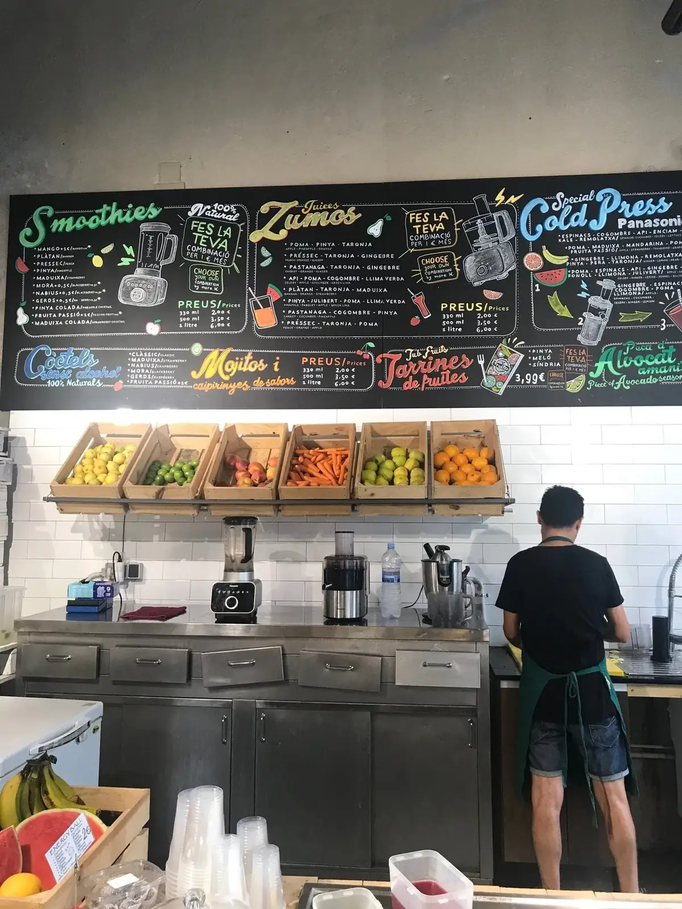
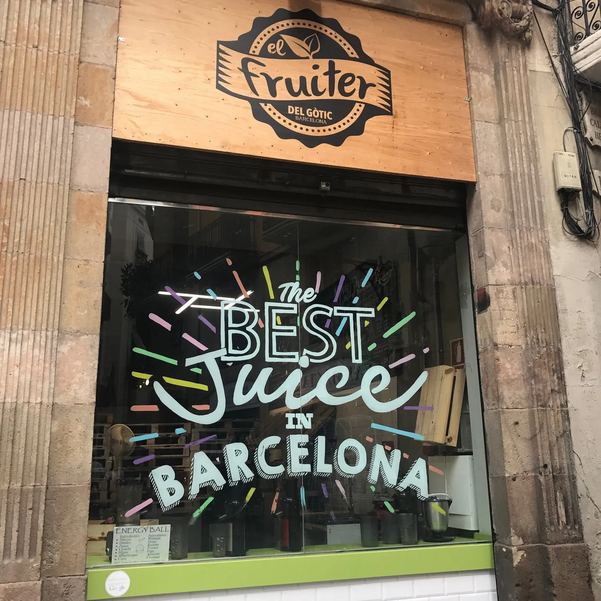

smoothies
Fruta + base líquida + cremosidad. Para desayunar fuerte o para sustituir un postre.
- Madurixa fresa-plátano
- Verdós kiwi-manzana
- Pinya colada piña-coco
- Mango-coco mango-leche coco
- Tú lo montas +1 €/combinación
vaso 330 ml4,50 €
Smoothies, zumos naturales, cold press y tarrinas de fruta de mercado en pleno corazón del Gòtic. Tú eliges lo que mezclas. Nosotros lo prensamos al momento. Sin azúcar añadido, sin conservantes, sin teatro.

Cada mañana llegan las cajas. Mango, piña, pomelo, naranja, lima, zanahoria, manzana, pera, fresa cuando es temporada. No tenemos almacén grande: lo que ves en las cajas es lo que hay. Si se acaba, se acabó.

Cuatro maneras de tomar fruta y verdura sin masticar a las nueve de la mañana. Smoothies cremosos, zumos exprimidos, prensados en frío, tarrinas troceadas. Tú eliges la combinación o pides una de la casa.
Fruta + base líquida + cremosidad. Para desayunar fuerte o para sustituir un postre.
100 % natural, recién exprimido, sin filtrar. Para empezar el día con vitamina pura.
Prensados en frío Panasonic. Tres recetas pensadas para mañana, mediodía o tarde.
Fruta cortada al momento, lista para el bolso. Para el paseo, la playa o el avión.
Sin trucos. Sin almacén oculto. Sin máquina misteriosa. Esto es exactamente lo que pasa entre que pides el zumo y te lo damos en la mano.
Miras la pizarra y eliges una receta de la casa o nos dices qué frutas y verduras quieres mezclar. Hasta cuatro ingredientes en el mismo vaso. Si dudas, te recomendamos.
Cogemos las piezas frescas de las cajas que ves al fondo. Las pelamos y troceamos a la vista. Nada está cortado de antes. Lo del cubo de fruta cortada del supermercado, aquí no existe.
Smoothie va a batidora con base líquida. Zumo natural va al exprimidor o extractor. Cold press pasa por la Panasonic. Lo verás encenderse cuando llegues a la barra. Tres minutos de ruido y listo.
Estamos en una esquina de la Plaça del Regomir, justo enfrente del Museu d'Idees i Invents (MIBA). El local es pequeño y luminoso: vidriera con el lettering "the best juice in Barcelona" y por dentro mostrador de acero, cajas de madera y una pizarra grande con todo escrito a mano.



Las dudas más habituales sobre la carta, el proceso y el pedido para llevar. Si no encuentras la tuya, ven a la barra y pregunta. Tarda dos minutos.
Cinco minutos a pie desde Plaça Sant Jaume bajando por Carrer del Regomir. Estamos en la esquina con el Carrer del Correu Vell. Si ves el cartel "The best juice in Barcelona" en la vidriera, llegaste.
Esto era una demo
Esta web era una muestra de lo que podríamos hacer para El Fruiter del Gòtic. Si te ha gustado y quieres una para tu negocio, escríbenos — Pedro te responde personalmente y la web final la adaptamos al 100% a tu gusto.
Pedro Núñez · Impacto Digital